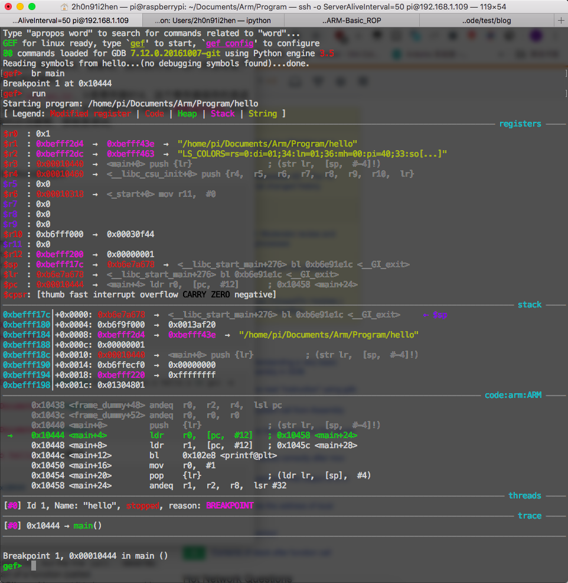
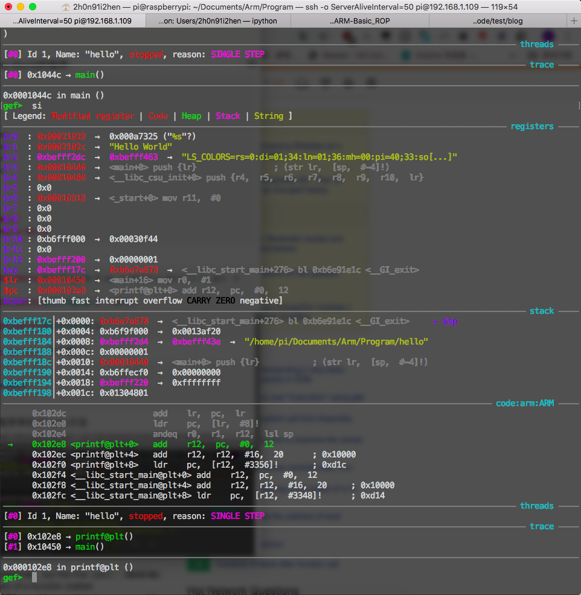
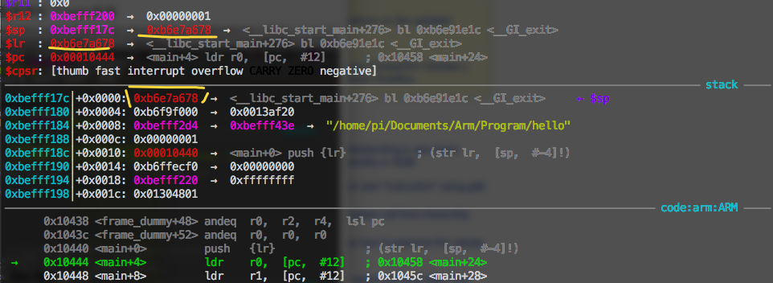

{kind=link}
构建第一个ARM程序

先说一下环境:1
2
3Device: Raspberry Pi Zero W
System: Linux raspberrypi 4.14.98+ #1200 Tue Feb 12 20:11:02 GMT 2019 armv6l GNU/Linux
Compiler: as、gcc
先看看代码1
2
3
4
5.global main
main:
mov r0, #0x1
bx lr
然后编译运行1
2
3as -o first.o first.s
gcc -o first first.o
./first
不出意外的话你讲看到输出什么都没有，这样就没意思了，重新运行下1
2./first ; echo $?
1
不出意外你将会看到输出1，echo $?的意思是获取最后命令的退出状态，什么是退出状态，你写一个c程序的main方法返回的那个数字就是，0代表没错误，其他就表示有错误
接着来一步一步的看这个程序
首先是第一行的.global main1
.global main
main表示每个程序的入口，你如果不写main，那你没发用gcc链接，而且你会得到类似这样的错误:1
2
3
4
5/usr/lib/gcc/arm-linux-gnueabihf/6/../../../arm-linux-gnueabihf/crt1.o: In function `_start':
(.text+0x34): undefined reference to `main'
collect2: error: ld returned 1 exit status
Makefile:4: recipe for target 'first' failed
make: *** [first] Error 1
所以还是乖乖的用main，.global的作用是把main声明为全局的，主要是为了让链接器知道，它是一个GNU汇编器指令，这种指令的作用是让汇编器做一些特殊的事；以.开头，后面跟指令和参数。
接着是main:，这就相当于函数名了
然后是 mov r0, #0x1，将1添加到r0；多说一句，mov不是移动的意思，是复制的意思，比如 mov r0, r1 不是把r1移动到r0，是复制，因为执行完了后r1并没有变。然后 r0 寄存器在arm中是用作返回值的。
最后是 bx lr ，bx lr等价于mov pc,lr，lr是寄存器R14，这个寄存器保存的是函数返回地址；这里的解释是我从网上抄的，反正我看不太明白这函数返回地址的含义；我用一个特别容易理解的办法解释，那就是调试;
我用汇编简单写了一个Hello World的程序：1
2
3
4
5
6
7
8
9
10
11
12
13.global main
main:
push {lr}
ldr r0,=fmt
ldr r1,=str
bl printf
mov r0, #0
pop {pc}
.data
fmt: "%s\n"
str: "Hello World"
特别简单，编译链接运行1
2
3
4pi@raspberrypi:~/Documents/Arm/Program $ as -o hello.o hello.s && gcc -o hello hello.s
pi@raspberrypi:~/Documents/Arm/Program $ ./hello
Hello World
pi@raspberrypi:~/Documents/Arm/Program $
没任何问题，开始调试gdb hello，下个断点1
2
3gef➤ br main
Breakpoint 1 at 0x10444
gef➤
然后运行run，可以看到程序停在了main方法

我们只需要关注 lr 寄存器，此时$lr : 0xb6e7a678，ni ni si 后

lr寄存器变了，$lr : 0x00010450，反汇编main方法可以看到lr的地址指向printf后面的指令

所以可以得知，lr寄存器的作用是保存上一个调用本方法的下一条指令地址，emmm咋感觉有点绕，反正大家看到这调试应该都懂了；
其实还可以说说push，我们可以回到刚run的时候，那时候push {lr}已经执行了，lr寄存器内容是0xb6e7a678，而sp栈寄存器的内容是0xbefff17c，这个地址的内容正是栈顶，内容就是lr的内容

所以 push {lr} 就是把lr压入栈